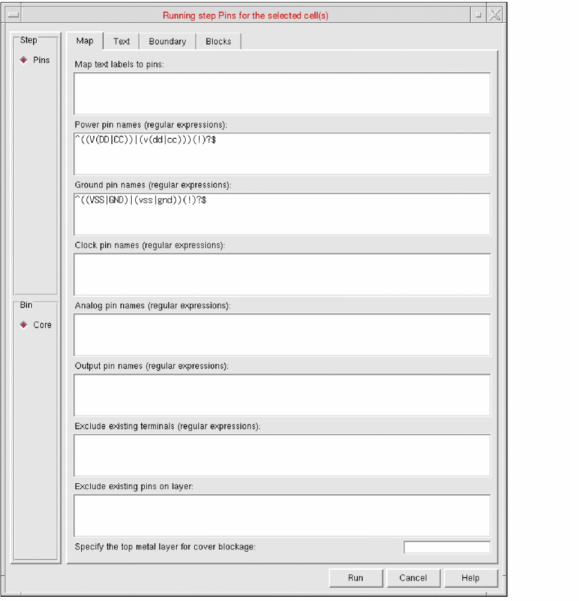
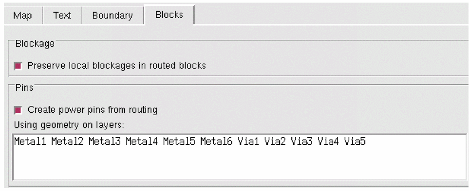

Customizing Abstracts of Routed Blocks in Standalone Abstract Generator
To customize abstracts of routed blocks in Standalone Abstract Generator:
-
Select one or more cells in the main window and choose Flow – Pins, or click the Pins icon.
The Running step Pins form is displayed. -
Click the Blocks tab.
 -
Select the Preserve local blockages in routed blocks field to control how Abstract Generator processes local blockages defined in the Blockage section in DEF 5.8. Local blockages do not have the
+PUSHDOWN,+FILL, or+SLOTmodifiers. -
Select the Create power pins from routing field to control whether pins are created from the routing defined in the
SPECIALNETSsection of the DEF file.
When checked, Abstract Generator creates pins from the routing defined in the SPECIALNETS section for the layers specified in the Using geometry on layers field. It does this even if there are pins already defined in the Pins section.
Related Topics
Return to top